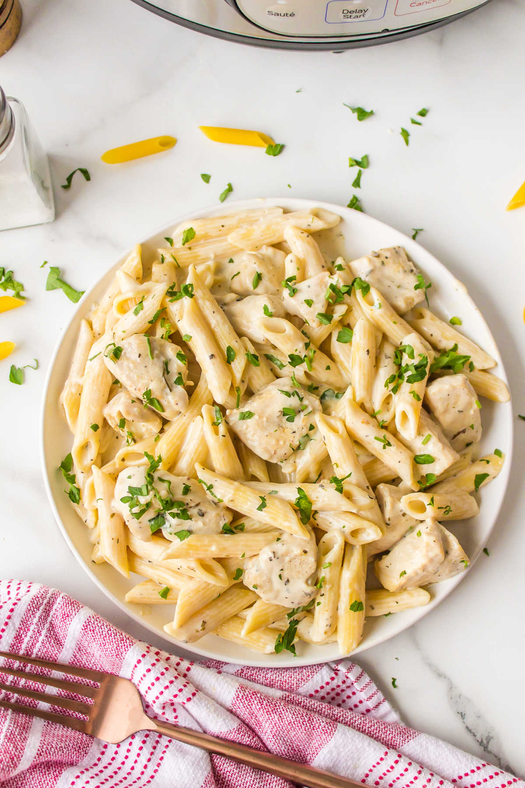

Ingredients
- 8 oz fettuccine (or any pasta)
- 1 chicken breast (or 2 thighs)
- Salt + pepper + garlic powder
- 1 tbsp butter
- 1 cup heavy cream (or half-and-half)
- 1 cup parmesan (grated)
- 2 cloves garlic (optional)
Cooking Steps
- Cook pasta in salted water, then drain (save a little pasta water).
- Season chicken with salt/pepper/garlic powder.
- Cook chicken in pan until done (about 4–6 min each side), then slice.
- In same pan, melt butter, add garlic (optional), then add cream.
- Add parmesan and stir until smooth.
- Add pasta + chicken. If too thick, add a splash of pasta water.
Picture
